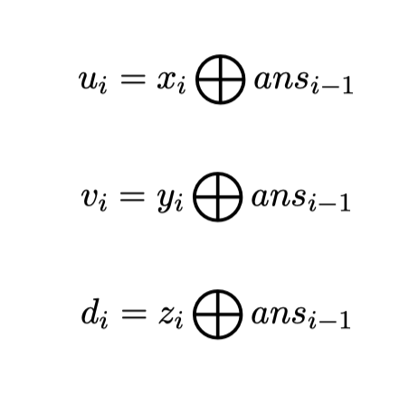

Comet OJ
Comet OJ第一行一个整数$n(1 \le n \le 4 \times 10^5)$代表点数。
接下来$n-1$行，每行两个数字$x_i,y_i(1 \le x_i,y_i \le n)$，表示有一条连接$x_i,y_i$的边。保证输入数据为一棵树。
接下来一行一个整数$q(1 \le q \le 4 \times 10^5)$代表询问个数。
接下来$q$行每行三个整数$x_i,y_i,z_i$。令第$i$次询问的答案为$ans_i$，规定$ans_0=0$。询问的真实参数$u_i,v_i,d_i$需要按照以下方式计算：

其中$\bigoplus$代表二进制异或运算。
保证$1 \le u_i,v_i \le n, 0 \le d_i < n$。